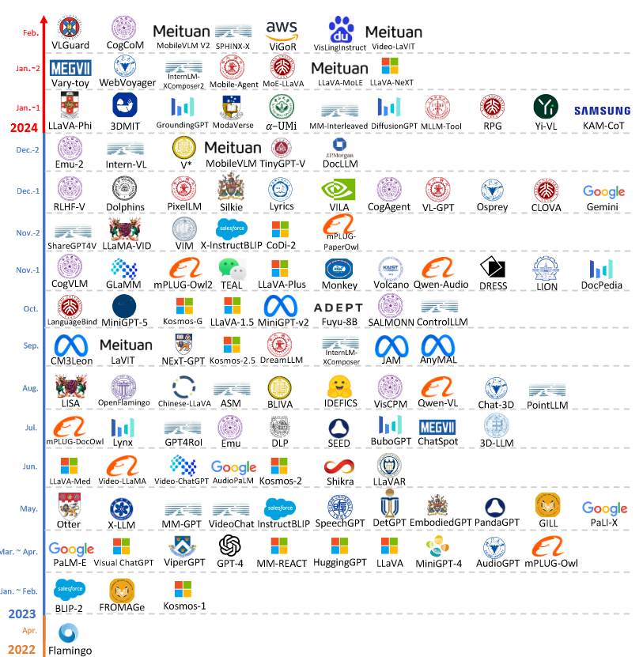
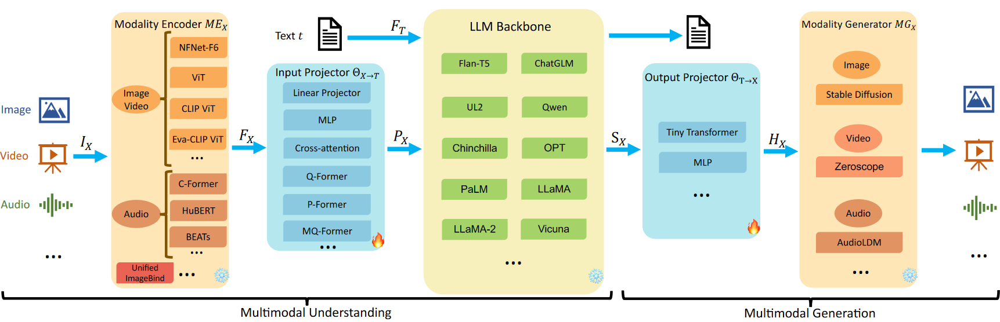
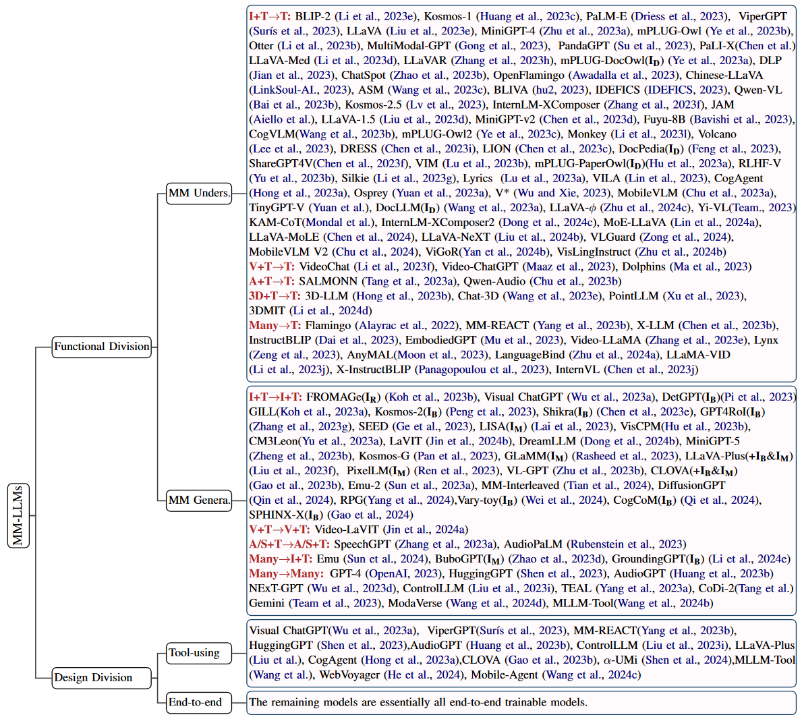
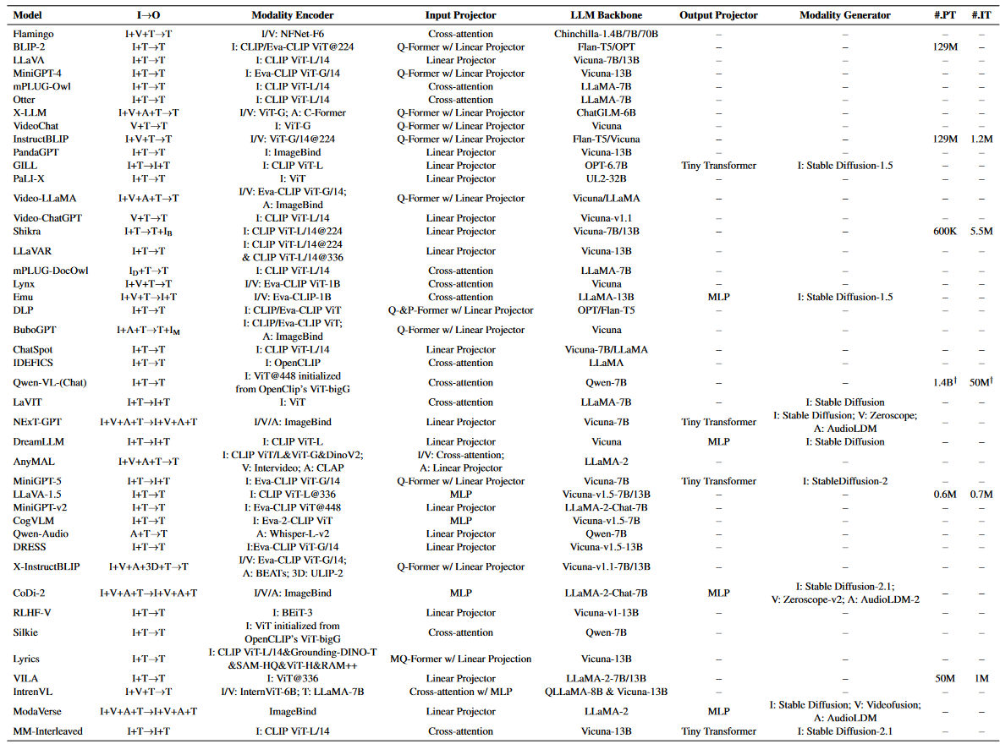
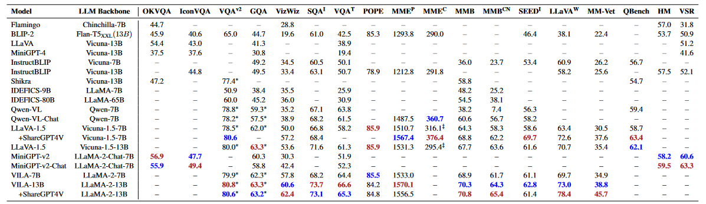
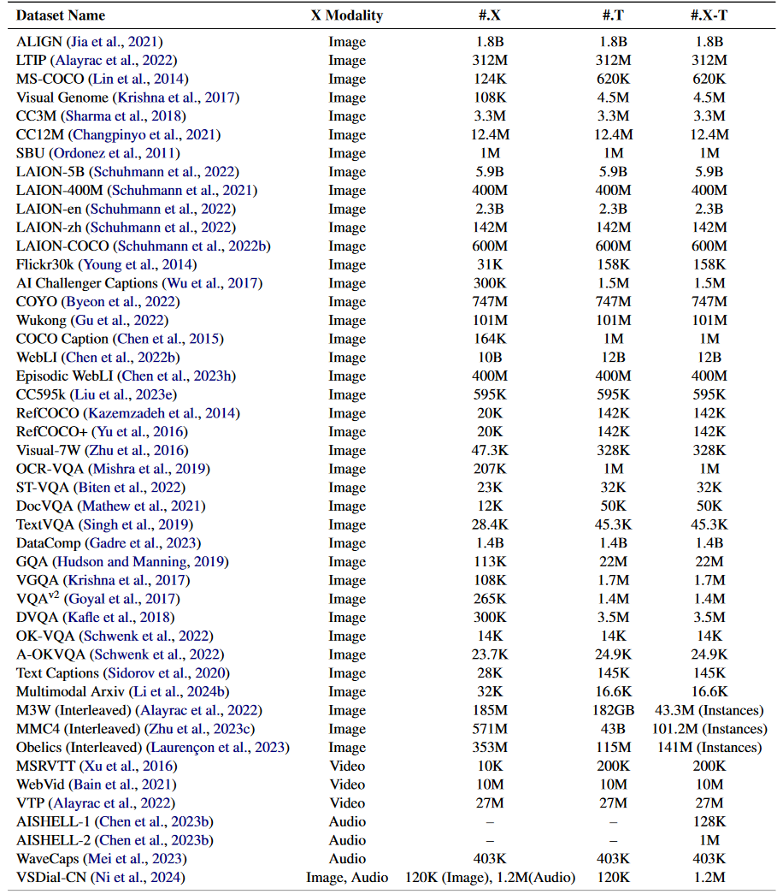
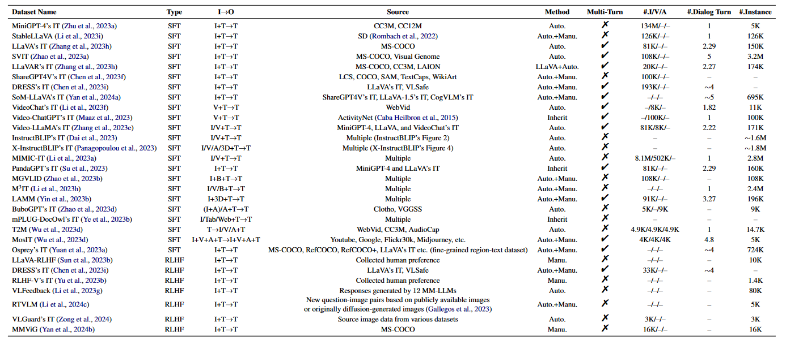

MM-LLMs综述(腾讯)
https://arxiv.org/pdf/2401.13601
MM-LLMs综述
摘要
- 首先，我们概述了模型架构和训练流程的通用设计形式。
- 随后，我们引入了涵盖126个MM-LLMs的分类体系，每个模型都具有特定的结构。
- 接着，我们评估了选定MM-LLMs在主流基准上的表现，并总结了关键的训练方法，以提升MM-LLMs的效能。
- 最后，我们探讨了MM-LLMs的未来发展方向，并维持一个实时跟踪网站，以监控该领域的最新进展
1. 引言
随着模型和数据集规模的扩展，传统的多模态模型在训练过程中产生了巨大的计算成本，尤其是当采用大规模的模型和数据集进行端到端训练时。认识到多模态研究是在各种模态的交叉点上进行的，一种合理的方法是利用现成的预训练单模态基础模型，特别强调强大的大型语言模型 (LLM)。从而催生了MM-LLM这一领域的出现。
LLMs 具备强大的语言生成、零样本迁移和上下文学习（ICL）等优势。
鉴于不同模态的基础模型是分别预训练的，MM-LLMs 面临的核心挑战在于如何有效地将 LLMs 与其他模态的模型连接，以实现协同推理。该领域的主要研究重点在于通过多模态预训练（PT）和多模态指令微调（IT）流程，细化各模态间的对齐并与人类意图保持一致。
MM-LLMs 的时间线如图 1 所示：

均为2023年：
最初的研究主要集中在多模态内容理解和文本生成方面，包括诸如
- 图文理解任务:BLIP-2,LLaVA,MiniGPT-4,OpenFlamingo
- 视频文本理解：VideoChat，Video-ChatGPT，LLaMA-VID
- 音频文本理解：QwenAudio
随后，MM-LLMs 的能力扩展到支持特定模态的输出，包括
- 图文输出任务：GILL，Kosmos-2，Emu，MiniGPT-5
- 语音/音频文本输出任务：SpeechGPT，AudioPaLM
近期的研究致力于模拟人类的任意模态转换，为通向通用人工智能铺平道路。一些研究尝试将 LLMs 与外部工具结合，以实现接近任意模态的多模态理解和生成，例如：VisualChatGPT，HuggingGPT
为了减少级联系统中的误差传播，一些项目开发了可处理任意模态的端到端 MM-LLMs:NExT-GPT,CoDi-2,ModaVerse
2. 模型架构

通用模型架构由五个部分组成，以多模态理解为重点的MM-LLMs仅包含前三个组件。
在训练过程中，模态编码器、LLM主干和模态生成器通常保持冻结状态，主要的优化集中在输入和输出投影器上。
由于投影器是轻量级组件，MM-LLMs中可训练参数的比例相较于总参数量明显较小（通常约占2%）。总参数量取决于MM-LLMs中使用的核心LLM的规模。因此，MM-LLMs可以高效训练，以支持多种多模态任务。
2.1 模态编码器
模态编码器（ME）负责将来自不同模态的输入编码为相应的特征，其公式如下:
X可以是图像、视频、音频、3D等
-
视觉模态: NFNet-F6, ViT, CLIP ViT, Eva-CLIP ViT, BEiT-3, OpenCLIP
-
音频模态:C-Former, HuBERT, BEATs
-
3D点云模态:ULIP-2, Point-BERT
处理多种异构模态的编码器，对于特别是任意模态转换的模型，采用了一个涵盖六种模态的统一编码器ImageBind。
2.2 输入投影器
输入投影器的任务是将其他模态的编码特征对齐到文本特征空间 T。对齐后的特征作为提示 ，然后与文本特征 一起输入到 LLM 主干中。给定 X-文本数据集{, }，目标是最小化以 X 为条件的文本生成损失：
其中。
输入投影器可以直接通过线性投影器或多层感知器（MLP）实现。
此外，也有更复杂的实现方式，例如交叉注意力、Q-Former、P-Former 和 MQ-Former。
- 交叉注意力（例如 Perceiver Resampler）使用一组可训练的向量作为查询项，并将编码特征 作为key，将特征序列压缩为固定长度。压缩后的表示直接输入到 LLM 中，或用于 X-文本的交叉注意力融合。
- Q-Former 从 中提取相关特征，并将这些特征作为提示。
- P-Former 生成“参考提示”，在 Q-Former 生成的提示上施加对齐约束。
- MQ-Former 对多尺度视觉和文本信号进行细粒度对齐。
其中，Q-Former、P-Former 和 MQ-Former 都需要额外的预训练过程来初始化
2.3 LLM主干
MM-LLMs 将大型语言模型作为核心组件，继承了一些显著特性，如零样本泛化、少样本的上下文学习（ICL）、思维链（CoT）推理和指令跟随。
LLM 主干负责处理来自各种模态的表示，进行输入的语义理解、推理和决策。其输出包括：
- 直接的文本输出 t
- 来自其他模态的信号标记（如果存在）
这些信号标记作为指令，指导生成器是否产生多模态内容，以及如果是的话，指定应生成的内容：
其中，其他模态的对齐表示可以视作对 LLM 的软提示调优。
此外，一些工作引入了参数高效微调（PEFT）方法，例如前缀调优（Prefix-tuning）、LoRA和层归一化调优。在这些情况下，额外的可训练参数量非常少，甚至不到 LLM 总参数量的 0.1%。
2.4 输出投影器
输出投影器 将来自LLM主干的信号标记表示 映射为特征 ，这些特征可以被接下来的模态生成器$MG_X 理解。给定 X-文本数据集 {I_X$, }，首先将 t输入LLM以生成相应的，然后映射为。为了对齐映射的特征，目标是最小化与 的条件文本表示之间的距离：
优化过程仅依赖于描述文本，不涉及任何音频或视觉资源 X，其中， 是 中的文本条件编码器。
输出投影器通常由一个具有可学习解码特征序列的小型Transformer或MLP实现
2.5 模态生成器
模态生成器 的任务是生成不同模态的输出。现有工作通常使用现成的潜在扩散模型（LDMs），如
- 图像生成的Stable Diffusion
- 视频生成的Zeroscope，
- 音频生成的AudioLDM-2
输出投影器映射的特征 作为去噪过程中的条件输入，以生成多模态内容。在训练过程中，首先将真实内容通过预训练的VAE转化为潜在特征，然后加入噪声得到噪声潜在特征。预训练的Unet 用于计算条件LDM损失 ：
通过最小化来优化参数和
3 训练流程
可以分为两个主要阶段：MM PT 和 MM IT
3.1 MM PT
在预训练阶段，通常利用 X-文本数据集，训练输入和输出投影器，以通过优化预定义的目标来实现不同模态之间的对齐
对于多模态理解模型，优化仅涉及方程（2）；对于多模态生成模型，优化包括方程（2）、（4）和（5）。
X-文本数据集包括图文、视频文本和音频文本，其中图文数据集有两种类型：
- 图文配对（例如，
） - 交错的图文语料库（例如，
）
X-文本数据集的详细信息见表3
3.2 MM IT
多模态指令微调（MM IT）是一种利用指令格式化的数据集对预训练的MM-LLMs进行微调的方法。
MM-LLMs能够通过遵循新指令来推广到未见过的任务，从而增强零样本性能。典型的例子包括 InstructGPT、OPT-IML和 InstructBLIP。
MM IT 包括监督微调（SFT）和基于人类反馈的强化学习（RLHF），旨在与人类意图保持一致并增强MM-LLMs的交互能力。SFT将部分预训练数据转换为指令感知格式。例如在视觉问答（QA）任务中，模板可能包括：
（1）"
（2）"
接下来，使用相同的优化目标微调预训练的MM-LLMs。SFT数据集可以是单轮QA或多轮对话的结构。
在SFT之后，RLHF会进一步微调模型，依赖于人类反馈来改进MM-LLMs的响应（例如，手动或自动标注的自然语言反馈，NLF）。该过程使用强化学习算法有效地集成非可微的NLF。模型训练生成基于NLF的响应。
现有MM-LLM在MM PT和MM IT阶段使用的数据集是多种多样的，但它们都是表3和表4中数据集的子集。
4 SOTA MM-LLMs
从功能和设计的角度对126个最新的多模态大型语言模型（MM-LLMs）进行分类，如图3所示

在设计方面：
“Tool-using”指的是将大型语言模型（LLM）作为黑盒处理，并为执行特定的多模态任务提供访问特定专家系统的能力。
“End-to-End”则表示整个模型在一个端到端的框架中联合训练。
基于先前定义的设计格式，我们还对其中43个最新MM-LLMs的架构和训练数据集规模进行了全面的比较，如表1所示。

发展趋势，以及一些代表性模型的核心贡献:
现有MM-LLMs的发展趋势包括：
- 从专注于多模态理解转向特定模态生成，进一步演化为任意模态转换（例如，MiniGPT-4 → MiniGPT-5 → NExT-GPT）
- 从多模态预训练（MM PT）到监督微调（SFT），再到基于人类反馈的强化学习（RLHF），训练流程不断优化，以更好地对齐人类意图并增强模型的对话交互能力（例如，BLIP-2 → InstructBLIP → DRESS）
- 拥抱多样化的模态扩展（例如，BLIP-2 → X-LLM 和 InstructBLIP → X-InstructBLIP）
- 使用更高质量的训练数据集（例如，LLaVA → LLaVA-1.5）
- 采用更高效的模型架构，从BLIP-2和DLP中复杂的Q-和P-Former输入投影器模块过渡到VILA中的简化线性投影器
5 基准和表现
我们整理了主要MM-LLMs在18个视觉-语言（VL）基准上的表现，如表2所示：

附录F中提供了这些基准的详细描述。
考虑到可用的众多基准，我们将重点评估和比较MM-LLMs在OKVQA、IconVQA、VQAv2和GQA等主要基准上的表现
-
OKVQA包含需要常识、世界知识和视觉知识等多种知识类型进行推理的问题。MiniGPT-v2和MiniGPT-v2-chat在该基准中表现最佳，展示了其卓越的推理能力
-
IconVQA强调抽象图形理解和全局认知推理能力，涉及实际图形问题的整体感知和认知推理。MiniGPT-v2和MiniGPT-v2-chat在该基准上也表现出色，突显了它们卓越的感知和认知推理能力。
-
VQAv2是一个较为平衡的视觉问答数据集，每个问题都与一系列图片配对。VILA-13B在该基准中表现最佳，展示了其卓越的多模态信息理解能力和抗语言偏见的能力
-
GQA专注于图像场景图，是一个以真实世界图像为基础的问题集合，每个问题都包含其含义的结构化表示和解答所需的详细逻辑步骤。LLaVA-1.5和VILA-7B在此基准上表现最佳，显示出其在该领域的出色推理能力
一些提升MM-LLMs效能的训练方案
关键训练方案
- 首先，更高的图像分辨率可以为模型提供更多的视觉细节，有助于处理需要细粒度细节的任务。
例如，LLaVA-1.5和VILA使用336×336分辨率，而Qwen-VL和MiniGPT-v2使用448×448。然而，更高的分辨率会导致更长的token序列，增加训练和推理成本。MiniGPT-v2通过在嵌入空间中连接四个相邻的视觉token来减少序列长度。最近，Monkey提出了一种解决方案，通过仅使用低分辨率视觉编码器而支持分辨率达到1300×800，无需重新训练高分辨率的视觉编码器。此外，DocPedia将视觉编码器的分辨率提高到2560×2560，提升了复杂文档和表格内容的理解能力，从而克服了开放源代码ViT在低分辨率下的表现限制。
- 其次，加入高质量的监督微调（SFT）数据显著提高了特定任务的表现。
例如，LLaVA-1.5和VILA-13B加入了ShareGPT4V数据集以改进性能，如表2所示。此外，VILA的研究揭示了一些关键发现：
（1）在LLM主干上执行参数高效微调（PEFT）促进了深层嵌入对齐，这是上下文学习（ICL）的关键；
（2）交错的图文数据有益，而仅使用图文对效果欠佳；
（3）在SFT阶段将仅有文本的指令数据与图文数据重新混合，既解决了文本任务表现下降的问题，也提升了视觉-语言任务的准确性
6 未来方向
在本章节中，我们探讨多模态大模型（MM-LLMs）在以下方面的未来发展方向：
更通用和智能的模型：我们可以从以下四个关键途径提升MM-LLMs的能力：
- 扩展模态：当前的MM-LLMs主要支持图像、视频、音频、3D和文本这几种模态。然而，现实世界涉及更广泛的模态。扩展MM-LLMs以适应更多模态（如网页、热图、图表和表格）将增加模型的通用性，使其在应用上更具普适性。
- 多样化语言模型：引入各种类型和规模的LLMs，让研究者可以根据其特定需求选择最合适的模型。
- 改进MM IT数据集质量：当前的MM IT数据集在质量上仍有提升空间，拓展指令的多样化可以提高MM-LLMs在理解和执行用户指令上的效果。
- 增强MM生成能力：当前的大多数MM-LLMs主要面向多模态理解。尽管部分模型已经具备多模态生成能力，但生成质量可能受到潜在LDMs（潜在扩散模型）能力的限制。探索检索方法与生成过程的结合具有显著的潜力，有望补充生成过程，进一步提升模型的整体性能。
更具挑战性的基准测试：
现有的基准测试可能不足以充分挑战MM-LLMs的能力，因为很多数据集在MM PT或MM IT阶段已出现过。这意味着模型可能已经在训练中学习过这些任务。
此外，当前的基准测试主要集中在视觉-语言子领域。因此，为了推动MM-LLMs的发展，亟需构建一个更具挑战性、规模更大且包含更多模态的基准测试，并采用统一的评估标准。例如，
-
GOAT-Bench旨在评估MM-LLMs在识别和应对社交媒体上的滥用行为方面的能力；
-
MM-Code评估MM-LLMs在视觉丰富情境下的算法问题解决能力；
-
DecodingTrust衡量MM-LLMs的可信度；
-
MathVista评估MM-LLMs在视觉上下文中的数学推理能力，
-
而GeoEval则评估其解决几何数学问题的能力。
-
MMMU和CMMMU分别引入了英文和中文的综合性多学科多模态理解与推理基准，以推动专家级人工智能的发展。
-
此外，Fan等人使用多面板视觉问答对MM-LLMs提出了挑战，
-
而BenchLMM则测试了MM-LLMs的跨风格视觉能力。
-
此外，Liu等人还深入研究了MM-LLMs的光学字符识别能力。
这些工作表明，需要更多复杂和多样化的基准来真正衡量MM-LLMs的高级能力。
移动/轻量化部署：要在资源受限的平台（如低功耗的移动和物联网设备）上部署MM-LLMs并实现最佳性能，轻量化实现至关重要。MobileVLM在该领域取得了一项重要进展。它通过战略性地缩小LLaMA的规模，实现了开箱即用的无缝部署。MobileVLM进一步引入了一个轻量化的下采样投影器，参数少于2000万个，从而提升了计算速度。最近，还有许多类似的研究致力于轻量化MM-LLMs，实现了在计算和推理效率方面与原始模型相近甚至更好的性能，包括TinyGPT-V、Vary-toy、Mobile-Agent、MoE-LLaVA和MobileVLM V2。然而，这一领域仍需进一步探索，以推动更深入的发展。
具身智能：具身智能旨在复制人类对环境的感知和互动能力，能够有效地理解环境、识别相关物体、评估其空间关系并制定全面的任务计划。具身AI任务（如具身规划、具身视觉问答和具身控制）使机器人能够通过利用实时观测来自主执行复杂的计划。在这一领域的一些典型工作包括PaLM-E和EmbodiedGPT。
- PaLM-E通过训练MM-LLM引入了多具身体代理，不仅仅作为一个具身决策者，还展示了在处理一般视觉-语言任务方面的能力。
- EmbodiedGPT则引入了一种具有经济性的方法，以链式思维（CoT）方式提升具身代理与现实世界互动的能力，建立了一个将高级规划与低级控制连接的闭环。
尽管基于MM-LLM的具身智能在与机器人结合方面取得了进展，进一步的研究仍需提升机器人在复杂环境中的自主性。
持续学习：由于大规模的MM-LLMs训练成本高昂，不适合频繁的再训练。然而，更新模型以赋予其新的技能并使其跟上快速发展的知识是必要的。因此，持续学习（CL）是必需的，使得模型能够灵活地高效利用不断涌现的数据，同时避免重新训练MM-LLMs的高昂成本。
MM-LLMs的CL可分为持续PT和持续IT两个阶段。最近，一个持续的MM IT基准被提出，用于在新的MM任务上持续微调MM-LLMs，同时保持在原始MM IT阶段所学任务上的优越表现。这带来了两个主要挑战：
- 灾难性遗忘，即模型在学习新任务时会遗忘之前的知识；
- 负向前传，即在学习新任务时未见过的任务性能会下降。
减少幻觉生成：幻觉生成指的是在没有视觉线索的情况下生成不存在的对象的描述，表现出不同的类型（如描述中的误判和不准确）。幻觉的成因多样，包括训练数据中的偏见和标注错误。此外，Skip \n指出，段落分隔符相关的语义漂移偏差在故意插入时可能会引发幻觉。当前减少幻觉的方法主要利用自反馈作为视觉线索。然而，这一挑战仍然存在，需要在辨别准确与幻觉输出之间进行微妙的权衡，并改进训练方法以增强输出的可靠性。
偏见和伦理考量：尽管MM-LLMs具有强大的能力，确保其安全和有效的应用仍至关重要。MM-LLMs生成的信息可能会延续刻板印象，甚至对弱势群体造成伤害。由于MM-LLMs从MM训练数据中学习模式，它们可能会再现这些数据中的偏见，可能导致代表性上的伤害。为了解决这一问题，我们可以开发新的基准测试，专门用于评估MM-LLMs中的偏见。此外，设计更有效和细致的校准方法也很重要。例如，使用人类反馈强化学习（RLHF）可以帮助校准MM-LLMs，以便生成符合人类价值观和期望的回答。
附录
A 相关综述
最近综述：
- Yin等人和Wu等人深入分析了视觉-语言理解模型的早期发展，重点讨论了模型架构和关键技术。arXiv:2306.13549，arXiv:2311.13165.
- Huang等人专注于视觉信息提取模型（IT），对当前最先进的模型进行比较，并提出了进一步改进的方向。arXiv:2312.16602
- Song等人重点研究了模态对齐方法，总结了不同模态之间的特征融合技术及其应用场景。arXiv:2311.07594
- Cui等人提供了一篇专门针对自动驾驶领域的综述，探讨了多模态大模型在该领域的潜在应用及其挑战。A survey on multimodal large language models for autonomous driving
相比之下，本综述的目标是提供一个全面的视角，涵盖多模态大语言模型的最新进展和广泛应用
B 模态编码器
B.1 视觉模态
- NFNet-F6（Brock等人，2021）：这是一种无归一化的ResNet，其自适应梯度裁剪技术允许在广泛增强的数据集上进行训练，同时实现图像识别的最新状态（SOTA）性能。
- ViT（Dosovitskiy等人，2020）：将Transformer应用于图像。首先将图像划分为patches，然后通过线性投影展平这些patch，接着通过Transformer块进行编码。
- CLIP ViT（Radford等人，2021）：在文本和图像之间建立联系，包含一个ViT和一个文本编码器。利用大量的文本-图像对，通过对比学习优化ViT，将成对的文本和图像视为正样本，将其他样本视为负样本。
- Eva-CLIP ViT（Fang等人，2023）：通过稳定CLIP的训练和优化过程，为扩展和加速大规模多模态基础模型的昂贵训练提供了新方向。
B.2 音频模态
- C-Former（Chen等人，2023b）：采用CIF（Dong和Xu, 2020; Zhang等人, 2022a; Han等人, 2022, 2023）进行序列转换，并使用Transformer提取音频特征。
- HuBERT（Hsu等人，2021）：基于BERT的自监督语音表示学习框架，通过对离散隐藏单元的掩码预测实现。它能够将连续的语音信号转换为离散单元的序列。
- BEATs（Chen等人，2023g）：一种迭代的音频预训练框架，旨在从音频Transformer中学习双向编码器表示。
C 主流的参数高效微调方法（PEFT）
参数高效微调（PEFT）方法主要是保持预训练的大语言模型（LLM）在冻结状态下，只调整少量额外的可训练参数
以下是一些代表性的PEFT方法的回顾，其中x和h分别代表原始模块的输入和输出，而h’表示附加PEFT后该模块的输出。
C.1 Prefix-tuning
Prefix-tuning通过向注意力模块的键和值添加可学习的前缀token来实现。
公式如下：
其中 表示两组前缀token，[⋅,⋅] 表示拼接操作，Attn定义如下：
C.2 Adapter
Adapter通常是一个残差块，包含一个下投影矩阵 A、一个非线性激活函数$ \sigma(·)$ 和一个上投影矩阵 B。它可以插入到预训练LLM的任意层中，公式如下:
C.3 LoRA4$
LoRA是最常用的 PEFT 方法。它假设参数的变化发生在低秩空间内。给定一个预先训练的矩阵$ W ∈ R^{c×d}$，LoRA 学习增量更新 ΔW 并将 ΔW 分解为两个低秩矩阵 和 之间的矩阵乘法，其中 r ≪ min(c,d）。 LoRA 遵循如下所述的前向过程：
QLoRA是一个量化的LoRA，其基本原理包括将预训练权重量化为4位，然后使用LoRA执行PEFT
C.4 LayerNorm 微调
LayerNorm 微调是一种高效策略，通过调整注意力模块中的LayerNorm，将LLM转变为多模态大语言模型,与全参数微调或LoRA相比，这种方法在多模态性能上表现强劲。
其他几种PEFT方法：
P-tuning，P-tuning v2，Adapt-Bias，Compacter，AdapterFormer，XTuner，P-LoRA，MoLE
D 代表性的LLM模型
现有多模态大语言模型（MM-LLMs）研究中的一些代表性LLM骨干模型：
- Flan-T5（Chung等人，2022）：对T5（Raffel等人，2020）进行指令调优，是一种编码器-解码器架构，使用统一的文本到文本训练方法，适用于所有自然语言处理问题，展现了强大的零样本和链式思维（CoT）能力。
- ChatGLM：一种中英双语对话模型，基于GLM（Du等人，2022b；Zeng等人，2022a）架构优化，专注于中文问答和对话，通过自回归掩码填充目标进行优化。
- InternLM（Team，2023）：一个多语言的万亿参数基础模型，基于超过一万亿个数据令牌进行训练。该模型结合高质量的人类标注对话数据和人类反馈强化学习（RLHF），在复杂指令响应中表现出符合人类伦理和价值观的能力。
- UL2（Tay等人，2022）：一种编码器-解码器模型，使用混合去噪目标进行训练，在多个基准测试中超越了T5的性能。
- Qwen（Bai等人，2023a）：基于大规模多样化数据集训练，专注于中文和英语，采用指令调优（SFT）和人类反馈强化学习（RLHF）技术进行对齐，从而生成如Qwen-Chat的对话模型。
- Chinchilla（Hoffmann等人，2022）：一种因果解码器，基于大量文本数据训练，提出模型大小应随着训练数据量的增加而按比例增长。
- OPT（Zhang等人，2022c）：GPT-3（Brown等人，2020）的开源克隆，旨在提供一个性能接近GPT-3的开源模型。
- PaLM（Chowdhery等人，2023）：一种因果解码器结构，具有并行注意力和前馈层，训练速度可提升至15倍。显著的改进包括RoPE嵌入、SwiGLU激活、多查询注意力等。
- LLaMA（Touvron等人，2023a）：包含解码器的模型，具有高效的因果注意力机制。
- LLaMA-2（Touvron等人，2023b）：专注于微调更强大、更安全的LLaMA-2-Chat模型，用于对话生成。该模型整合了40%更多的训练数据，采用分组查询注意力并扩展了上下文长度。
- Vicuna（Chiang等人，2023）：基于LLaMA构建，使用从ShareGPT.com收集的用户对话数据进行训练，并通过指令调优（SFT）进行优化。
E 代表性多模态大模型
-
Flamingo（Alayrac等人，2022）： Flamingo是一系列视觉语言（VL）模型，设计用于处理交错的视觉数据和文本，能够生成自由形式的文本作为输出。
-
BLIP-2（Li等人，2023e）： 提出了一种更高效的框架，包括轻量级的Q-Former模块，用于弥合模态间的差距，并利用冻结的大语言模型（LLM）。借助LLM，BLIP-2能够使用自然语言提示实现零样本的图像到文本生成。
-
LLaVA（Liu等人，2023e）： 开创了信息技术（IT）技术向多模态领域的迁移。为了解决数据稀缺问题，LLaVA创建了一个新的开源多模态指令跟随数据集（通过ChatGPT/GPT-4生成），并引入了多模态指令跟随基准LLaVA-Bench。
-
MiniGPT-4（Zhu等人，2023a）： 提出了一种简化的方法，通过仅训练一个线性层，将预训练的视觉编码器与大语言模型对齐。这种高效的方法使得可以重现GPT-4的能力。
-
mPLUG-Owl（Ye 等人，2023b）为 MM-LLM 提出了一种新颖的模块化培训框架，结合了视觉上下文。为了评估不同模型在 MM 任务中的表现，该框架包含一个名为 OwlEval 的教学评估数据集。
-
X-LLM（Chen 等人，2023b）扩展到包括音频在内的各种模式，并表现出强大的可扩展性。利用 Q-Former 的语言可迁移性，X-LLM 成功应用于汉藏汉语背景。
-
VideoChat（Li et al., 2023f）开创了一种高效的以聊天为中心的 MM-LLM，用于视频理解对话，为该领域的未来研究制定标准，并为学术界和工业界提供协议。
-
InstructBLIP (Dai et al., 2023) 基于预训练的 BLIP-2 模型进行训练，在 MM IT 期间仅更新 Q-Former。通过引入指令感知的视觉特征提取和相应的指令，该模型使得能够提取灵活多样的特征。
-
PandaGPT（Su et al., 2023）是一种开创性的通用模型，能够理解 6 种不同模式的指令并根据指令采取行动：文本、图像/视频、音频、热、深度和惯性测量单位。
-
PaLI-X（Chen 等人，2023h）使用混合 VL 目标和单峰目标进行训练，包括前缀完成和屏蔽令牌完成。事实证明，这种方法对于下游任务结果和在微调设置中实现帕累托前沿都是有效的。
-
Video-LLaMA（Zhang 等人，2023e）引入了多分支跨模式 PT 框架，使法学硕士能够在与人类对话的同时同时处理给定视频的视觉和音频内容。该框架使视觉与语言以及音频与语言保持一致。
-
Video-ChatGPT（Maaz 等人，2023）是专门为视频对话设计的模型，能够通过集成时空视觉表示来生成有关视频的讨论。
-
Shikra (Chen et al., 2023e) 引入了一种简单且统一的预训练 MM-LLM，专为参考对话而设计，参考对话是一项涉及图像中区域和对象讨论的任务。该模型表现出了值得称赞的泛化能力，可以有效处理看不见的设置。
-
DLP（Jian et al., 2023）提出了 P-Former 来预测理想提示，并在单模态句子数据集上进行训练。这展示了单模态训练增强 MM 学习的可行性。
-
BuboGPT（Zhao et al., 2023d）是通过学习共享语义空间构建的模型，用于全面理解 MM 内容。它探索图像、文本和音频等不同模式之间的细粒度关系。
-
ChatSpot（Zhao et al., 2023b）引入了一种简单而有效的方法，用于微调 MM-LLM 的精确引用指令，促进细粒度的交互。由图像级和区域级指令组成的精确引用指令的结合增强了多粒度 VL 任务描述的集成。
-
Qwen-VL (Bai et al., 2023b) 是一种多语言MM-LLM，支持英语和中文。 Qwen-VL 还允许在训练阶段输入多个图像，提高其理解视觉上下文的能力。
-
NExT-GPT（Wu et al., 2023d）是一种端到端、通用的any-to-any MM-LLM，支持图像、视频、音频和文本的自由输入和输出。它采用轻量级对齐策略，在编码阶段利用以LLM为中心的对齐方式，在解码阶段利用指令跟踪对齐方式。
-
MiniGPT-5（Zheng et al., 2023b）是一种 MMLLM，集成了生成 voken 的反演以及与稳定扩散的集成。它擅长为 MM 生成执行交错 VL 输出。在训练阶段加入无分类器指导可以提高生成质量。
-
LLaVA-1.5（Liu 等人，2023d）报告了对 LLaVA 框架的简单修改，包括应用 MLP 投影和引入为学术任务量身定制的 VQA 数据，以及简单的响应格式提示。这些调整增强了 MM 的理解能力。
-
MiniGPT-v2（Chen 等人，2023d）是一种 MMLLM，设计为用于各种 VL 多任务学习的统一接口。为了创建一个能够熟练处理多个 VL 任务的单一模型，需要在训练和推理过程中为每个任务合并标识符。这有助于明确任务区分，最终提高学习效率。
-
CogVLM（Wang 等人，2023b）是一种开源 MM-LLM，它通过注意力层和前馈层中的可训练视觉专家模块来弥合模式之间的差距。这允许深度融合 MM 特征，而不会影响 NLP 下游任务的性能。
-
DRESS（Chen et al., 2023i）引入了一种使用自然语言反馈来增强与人类偏好的一致性的方法。 DRESS 扩展了条件强化学习算法，以集成不可微分的自然语言反馈，训练模型根据反馈生成适当的响应。
-
X-InstructBLIP（Panagopoulou 等人，2023）引入了一个具有指令感知表示的跨模式框架，其可扩展性足以使法学硕士能够跨多种模式处理不同的任务，包括图像/视频、音频和 3D。值得注意的是，它不需要特定模态的 PT 就能实现这一点。
-
CoDi-2（Tang 等人，2023b）是一种 MM 生成模型，在模态交错指令跟踪、上下文生成以及多轮对话的用户模型交互方面表现出色。它增强了 CoDi（Tang 等人，2023c）来处理复杂的模态交错输入和指令，自回归生成潜在特征。
-
VILA (Lin et al., 2023) 在视觉任务中表现出色，并在保持纯文本能力的同时表现出卓越的推理能力。它通过利用 LLM 学习的全部功能、使用图像-文本对的交错属性以及实施细致的文本数据重新混合来实现这一目标。
F VL 基准
表 2 中所示
G 训练数据集
MM PT 和 MM IT 数据集的统计数据分别如表 3 和表 4 所示。

